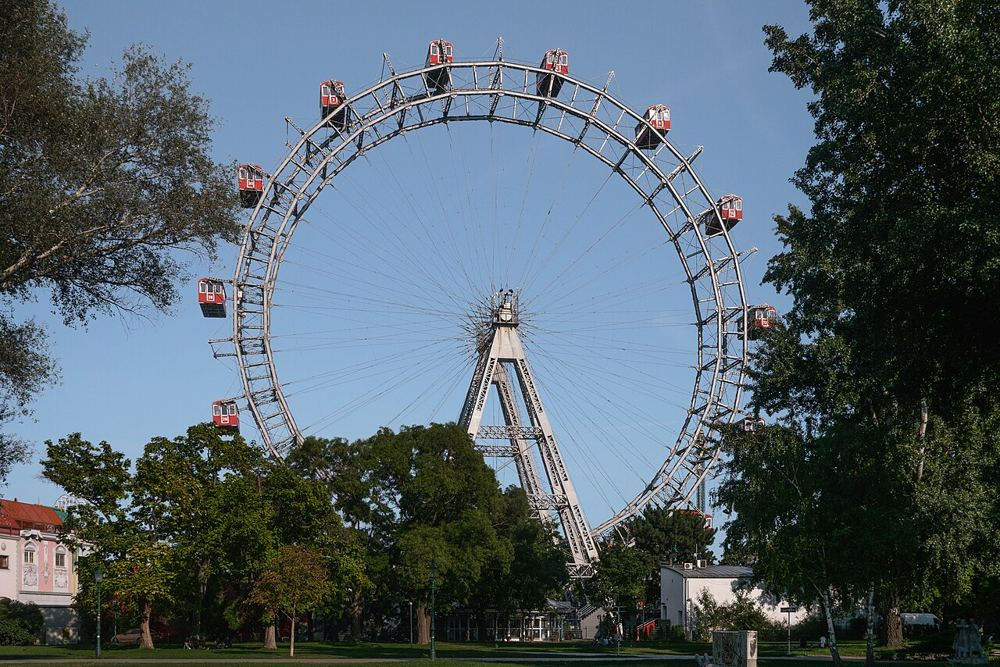

Prater et grande roue
L'entrée du parc d'attractions est libre, on paie manège par manège. La grande roue tourne lentement dans des cabines fermées : idéale avec des petits.


Ce que les enfants vont aimer
Monter tout en haut de la grande roue dans une cabine rouge.
Le plus calme : un matin en semaine. La grande roue tourne toute l'année.
Autour du lieu
Toilettes, tables à langer, aires de jeux, eau potable, pharmacie et station les plus proches, avec le temps de marche.
- Toilettes : Toilettes publiques, à 1 min à pied (20 m) · gratuit · accès fauteuil
- Toilettes : Toilettes publiques, à 3 min à pied (100 m) · payant
- Table à langer : Toilettes avec table à langer, à 1 min à pied (40 m) · payant
- Table à langer : Toilettes avec table à langer, à 2 min à pied (70 m) · payant · accès fauteuil
- Aire de jeux : Aire de jeux, à 8 min à pied (300 m)
- Aire de jeux : Aire de jeux, à 9 min à pied (350 m)
- Eau potable : Point d'eau potable, à 2 min à pied (90 m)
- Pharmacie : Prater-Apotheke, à 8 min à pied (320 m) · accès fauteuil
- Station : Praterstern, à 7 min à pied (260 m) · accès sans marche signalé
D'après OpenStreetMap, non vérifié sur place.
À combiner dans la journée
Petit train du Prater (Liliputbahn)
Un tout petit train qui traverse la forêt du Prater.
À 5 min à pied (200 m) · 0–10 ans
Île du Danube
Une île toute en longueur au milieu du Danube.
À 1,8 km, en transports · 0–14 ans
Haus der Musik
Diriger un vrai orchestre avec une baguette magique.
À 2,2 km, en transports · 5–14 ans
S'il pleut : le plan B couvert
Questions fréquentes
Prater et grande roue : à partir de quel âge ?
Nous le conseillons de 2 à 14 ans. Monter tout en haut de la grande roue dans une cabine rouge.
Prater et grande roue : combien de temps prévoir ?
Environ 3 h sur place, sans compter le trajet.
Prater et grande roue : quand y aller pour éviter la foule ?
Le plus calme : un matin en semaine. La grande roue tourne toute l'année.
Prater et grande roue : peut-on y aller avec une poussette ?
Facile en poussette. Quelques rues pavées autour; 2 escaliers recensés à moins de 250 m, souvent contournables; station la plus proche : Praterstern, à 260 m, accès sans marche signalé; 7 ascenseurs publics signalés à moins de 400 m.
Prater et grande roue : comment y aller ?
Riesenradplatz 1, 1020 Wien. Métro U1 ou U2, station Praterstern.
Prater et grande roue : l'entrée est-elle gratuite ?
En partie : l'accès principal est libre, certaines zones ou activités sont payantes.
Fiche vérifiée le 29 octobre 2026. Horaires, tarifs et conditions d'accès changent souvent : vérifiez toujours sur le site officiel avant de partir. Tous les lieux de Vienne avec des enfants.